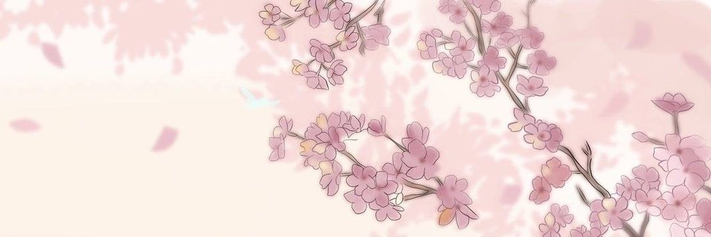

05 / EVENTS & COLLECTION
Stories in
every detail ❀ ݁˖ . ݁
Events introduce new stories, character artwork
and moments that develop the characters.

EVENT STORIES
All about events ⋆˚✮｡
Events add to the game's story and
give characters new experiences.

What happens in an event?
Each event has its own theme and story. During this event, players can read the story, play songs and earn event points and rewards.
Some events focus on one group, while others bring characters from different groups together.
CARD COLLECTION
Character cards ⋆˙⟡
Character cards feature unique artwork and
can be used to build your in-game team.


MY PERSONAL FAVOURITES
My favourite parts ⋆˚࿔
My favourite event

Unnamed Harmony is the 27th event in Project SEKAI and features Leo/need. It ran from July 4th to July 10th, 2022. This is my favourite event because it features the Tenma Saki, one of my favourite characters. The story follows her as she takes on the role of the band's composer while Leo/need begins to gain recognition.

Saki during Unnamed Harmony.
My favourite card

Game Face At The Meeting! is a 4-star card for Hanasato Minori from MORE MORE JUMP! It has a maximum talent of 37,292 and the skill What We Each Do, which provides a 120% score boost for 5 seconds. This is my favourite card because it was the first ever 4-star card I recieved featuring one of my favourite characters.

Another image of Minori.
My favourite song

Tonal Twinkle Tetrad is my favourite and most memorable song because it was the first Expert 27 song I achieved a Full Combo on. It was composed by OSTER project and it is sung by Wonderlands x Showtime in the game. The song has a BPM of 155 and was added to the game on February 9th, 2024. The in-game version is 2:01 long, while the full version is 4:23.